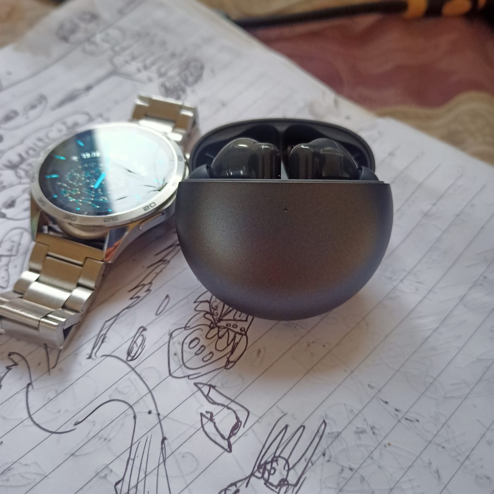
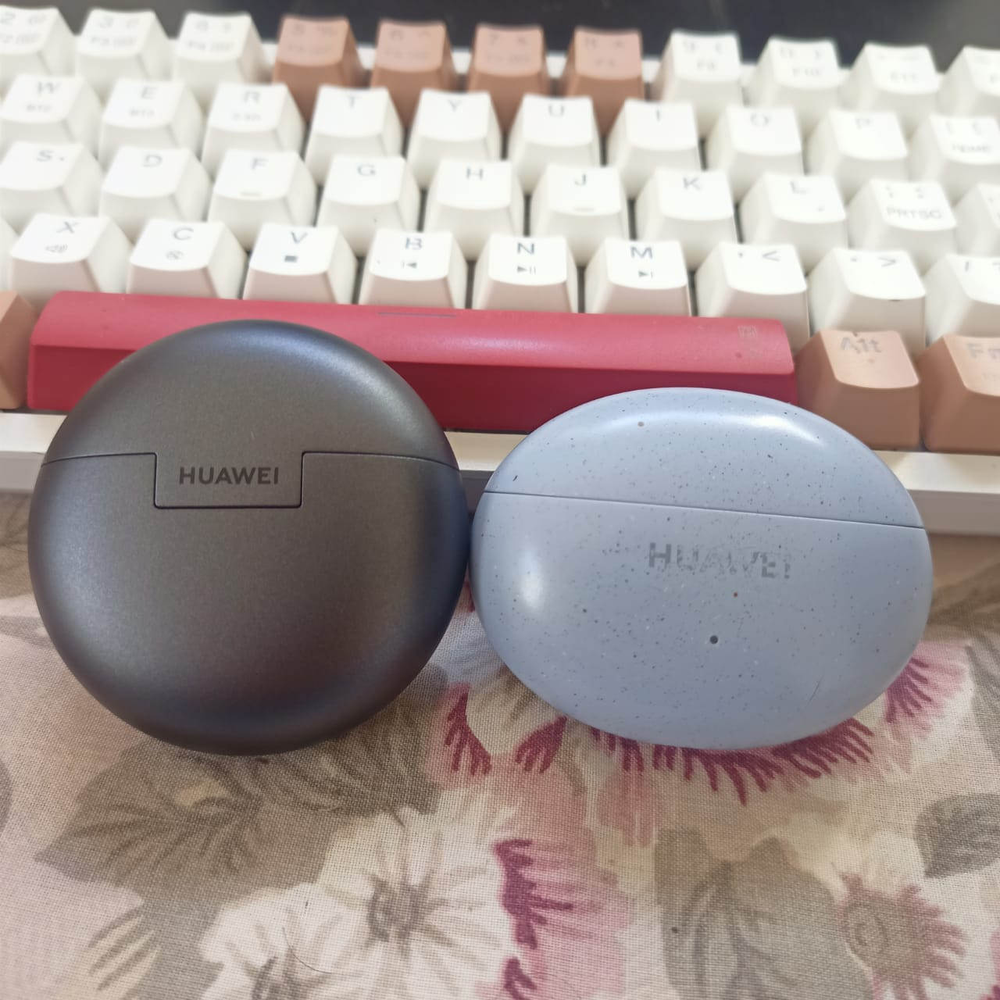
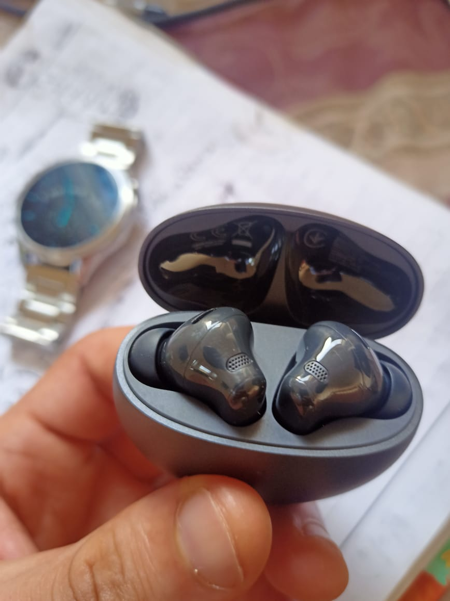
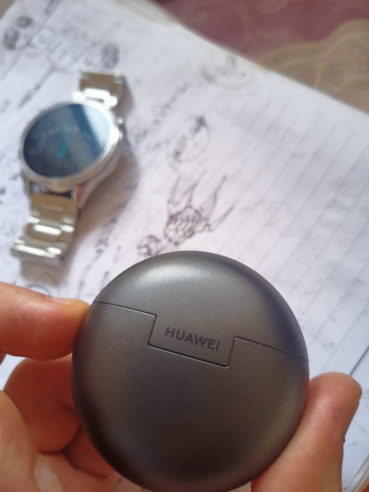

Huawei FreeBuds 7i Review and specs: Is It Worth Upgrading from FreeBuds 5i?
Huawei FreeBuds 7i Review: Is It Worth Upgrading from FreeBuds 5i? (20 Days Testing)
Hi, I’m Kareem, a college student working on machine learning and web technology projects. I previously reviewed the Huawei FreeBuds 5i after 2 months of daily use, and now I’ve been testing the new FreeBuds 7i for 20 days. I don’t own a Huawei phone - I use a Realme Android device and MSI Linux laptop - so this is an honest review from someone using these earbuds outside the Huawei ecosystem. If you want to see more reviews about Huawei you can join the Channel
Unboxing and First Impressions
The FreeBuds 7i comes in a neat package with the earbuds, charging case, four sizes of silicone ear tips (XS, S, M, L - one more than the 5i), a USB-C charging cable, and the usual documentation. The case is bigger than the 5i (57.8 x 57.8 x 27.8mm vs 61.8 x 48.2 x 26.9mm) and slightly heavier at 36.5g compared to 33.9g, but there’s a good reason: the battery capacity jumped from 410mAh to 510mAh.
Available in three Morandi colors - Pink, White, and Black - the design is understated and elegant, though I personally miss the Isle Blue option from the 5i.

Huawei Freebuds 7i call Qauilty and Microphone
This is where the FreeBuds 7i truly shines. I don’t use these for regular mobile calls yet, but I rely on them daily for video meetings with my project partners. On the very first day, my friends noticed the difference immediately!
One partner said: “Your voice is now more clear, did you change anything?”
Another friend asked: “Do you have a mechanical keyboard?” The funny thing is, I’ve always had a mechanical keyboard, but with the 5i my voice wasn’t clear enough for them to hear the typing sounds in the background. With the 7i, my voice comes through crystal clear while they can now actually hear my keyboard clicks.
The secret? The FreeBuds 7i features a bone conduction microphone working alongside three traditional microphones, with AI call noise cancellation that can handle noisy environments up to 90 dB. This combination delivers significantly better voice clarity compared to the standard mics on the 5i.
For anyone who does frequent video calls, online meetings, or even streaming, this upgrade alone justifies the purchase.

Sound Quality and Audio Performance
The FreeBuds 7i packs an 11mm quad-magnet dynamic driver (upgraded from the 5i’s 10mm dynamic driver) with a wide frequency response range of 20 Hz to 40 kHz.
In real-world listening, the sound quality is similar to the 5i - both deliver excellent audio for the price point.
Music sounds clear with good separation, bass is punchy without being overwhelming, and podcasts come through crisp and detailed. The 7i also features Dynamic EQ that adjusts based on what you’re listening to, plus you can customize sound with 10 EQ bands through the AI Life app.
If you’re upgrading purely for music audio quality, you won’t notice a dramatic difference. The real improvements are in other areas.
huawei 7i Noise Cancellation: Intelligent Dynamic ANC 4.0
The noise cancelling performance is better by a good margin. Huawei’s new Intelligent Dynamic ANC 4.0 delivers an average noise cancellation depth of 28 dB with less than 0.5 second latency. In practical terms, this means faster adaptation to changing noise environments.
When I walk down the street at night, I don’t hear most of the ambient voices and traffic noise anymore. On the subway or bus, the engine noise is effectively blocked.
In cafés, the background chatter fades away, letting me focus on my work. Are you in complete silence? No - some sounds still get through, especially sudden loud noises. But the improvement over the 5i is noticeable and makes a real difference in noisy environments.
warning: after a month the noise left bud creates a very noise sound when it’s in ultra mode or dynamic with hight noise it’s very annoying and give me headache i udpated the earbuds to the latest version but it didn’t fixed
Mode Switching: A Small Change That Matters
One of my biggest frustrations with the 5i was the mode cycle order: Awareness → Off → Noise Cancelling. Since I primarily use ANC mode, I had to cycle through two modes every time I put them on.
The 7i finally fixes this! The new order is: Noise Cancelling → Off → Awareness. This might seem like a minor detail, but when you use these earbuds multiple times a day, it’s a quality-of-life improvement I genuinely appreciate.
Multi-Device Connection and Bluetooth Performance
The FreeBuds 7i runs on Bluetooth 5.4 (upgraded from 5.2 on the 5i) and supports simultaneous dual-device connection. It’s noticeably smarter at switching between my Linux laptop and Realme Android phone compared to the 5i.
The connection is stable, transitions are smooth, and it works seamlessly whether I’m using the Huawei AI Life app or not. This is impressive considering I don’t even own a Huawei phone. The improved Bluetooth version also means better range and more stable connectivity.
For the Linux users out there: yes, it connects via bluetoothctl, though you might need to restart Bluetooth occasionally for a clean connection - same as with the 5i.

Battery Life: Longer and Faster
This is where the larger case really pays off:
FreeBuds 7i Battery Performance:
- Single charge with ANC ON: 5 hours
- Single charge with ANC OFF: 8 hours
- Total with case (ANC ON): 20 hours
- Total with case (ANC OFF): 35 hours
- Earbud charging time: 40 minutes
- Case charging time: 60 minutes (wired USB-C)
- Fast charging: 10 minutes = 4 hours of playback
FreeBuds 5i Battery Performance:
- Single charge with ANC ON: 6 hours
- Single charge with ANC OFF: 7.5 hours
- Total with case (ANC ON): 18.5 hours
- Total with case (ANC OFF): 28 hours
- Earbud charging time: 60 minutes
- Case charging time: 110 minutes (wired USB-C)
While the 5i offers slightly longer listening time on a single charge with ANC enabled (6h vs 5h), the 7i wins in total battery capacity and especially charging speed. Going from 110 minutes to 60 minutes for a full case charge is almost half the time! The earbuds also charge faster - 40 minutes vs 60 minutes.
The fast charging feature is genuinely useful: a quick 10-minute charge gives you 4 hours of playback when you’re in a hurry.
Design, Build Quality, and Comfort
I’ll be honest here: the FreeBuds 5i case was more elegant and modern looking with its wider, flatter profile. The 7i’s case is more square-shaped and less stylish. However, the earbuds themselves are well-designed.
Each earbud weighs just 5.4g (vs 4.9g on the 5i), which is barely noticeable. The 7i includes four ear tip sizes (XS, S, M, L) compared to three on the 5i (S, M, L), giving you better options for a secure, comfortable fit. Both models have IP54 rating, meaning they’re dust-tight and splash-resistant - perfect for workouts or light rain.
The sound when closing the case is satisfying - a solid, premium click that I genuinely enjoy.
Gesture Controls and Smart Features
The touch controls are intuitive and responsive: - Double-tap: Play/pause music, answer/end calls - Triple-tap: Skip to next track (new feature vs 5i) - Swipe up/down: Volume control - Touch-and-hold: Switch between ANC modes or reject calls
New features on the 7i include: - Nod to pick up: Answer calls by nodding your head (needs to be enabled) - Unlimited Spatial Audio: 360° sound with head-tracking - Audio Sharing: Connect two pairs of FreeBuds to one device
The spatial audio feature works across different apps and devices, creating an immersive listening experience for movies and gaming.

Huawei Freebuds 7i specs
The FreeBuds 7i is packed with sensors: - Infrared sensor (for wear detection) - Hall sensor (for case open/close detection) - Touch sensor (for gesture controls) - Gyroscope (for head-tracking in spatial audio) - Accelerometer - Bone voice sensor (for call quality)
These work together to provide smart features like auto-pause when you remove an earbud, and the improved call quality I mentioned earlier.
Compatibility: Works Beyond Huawei Ecosystem
One question I see often: “Do these work with non-Huawei phones?” Yes, absolutely! I’ve been using them with: - Realme Android phone (works perfectly) - MSI Linux laptop (connects via bluetoothctl) - Huawei Mate Pad 11 tablet (seamless integration)
The AI Life app (available for both iOS and Android) unlocks additional features like EQ customization, firmware updates, and gesture configuration. But even without the app, the core functionality works great on any Bluetooth device.
FreeBuds 7i vs FreeBuds 5i: Complete Comparison
| Feature | FreeBuds 7i | FreeBuds 5i |
|---|---|---|
| Driver Size | 11mm quad-magnet dynamic | 10mm dynamic |
| Frequency Response | 20 Hz - 40 kHz | Standard |
| ANC Technology | Intelligent Dynamic ANC 4.0 (28dB) | Active noise cancellation |
| Microphone | 3 mics + bone conduction | Standard mics |
| Call Quality | Significantly clearer | Distant, unclear |
| Bluetooth | 5.4 | 5.2 |
| Battery (ANC ON) | 5h + 20h total | 6h + 18.5h total |
| Battery (ANC OFF) | 8h + 35h total | 7.5h + 28h total |
| Case Battery | 510mAh | 410mAh |
| Earbud Charging | 40 minutes | 60 minutes |
| Case Charging | 60 minutes | 110 minutes |
| Fast Charging | 10min = 4h | Not available |
| Weight (earbud) | 5.4g | 4.9g |
| Weight (case) | 36.5g | 33.9g |
| Ear Tip Sizes | 4 sizes (XS, S, M, L) | 3 sizes (S, M, L) |
| Mode Cycle Order | NC → Off → Awareness | Awareness → Off → NC |
| Spatial Audio | Yes with head-tracking | No |
| Triple-tap Gesture | Yes | No |
| Nod to Answer | Yes | No |
| IP Rating | IP54 | IP54 |
| Colors | Pink, White, Black | Nebula Black, Isle Blue, Ceramic White |
| Price Range | ~$100 | ~$100 |
Who Should Buy the FreeBuds 7i?
Buy the 7i if you:
- Do frequent video calls, online meetings, or streaming
- Want the best call quality in this price range
- Need better active noise cancellation
- Value faster charging (60min vs 110min for case)
- Switch between multiple devices regularly
- Want spatial audio with head-tracking
- Appreciate the extra ear tip size for better fit
Stick with the 5i if you:
- Need maximum single-charge battery life (6h vs 5h with ANC)
- Prefer the more elegant case design and Isle Blue color
- Rarely make calls or do video meetings
- Are satisfied with current ANC performance
- Want slightly lighter earbuds (4.9g vs 5.4g)
Common Questions About FreeBuds 7i
Q: Do FreeBuds 7i work with iPhone? Yes, they work with any Bluetooth device including iPhones. Download the AI Life app for iOS to access advanced features.
Q: How is the microphone quality for calls? Excellent. The bone conduction mic combined with AI noise cancellation delivers clear voice quality even in noisy environments up to 90 dB.
Q: Can I use just one earbud? Yes, both earbuds work independently. You can use either the left or right earbud alone.
Q: Are they good for working out? Yes, the IP54 rating makes them dust-tight and splash-resistant. Just wipe them dry after workouts.
Q: How’s the latency for gaming? The Bluetooth 5.4 connection provides low latency suitable for casual mobile gaming, though dedicated gaming earbuds might perform better for competitive play.
Final Verdict: Is the FreeBuds 7i Worth It?
After 20 days of daily use, the Huawei FreeBuds 7i is a meaningful upgrade over the 5i. The microphone quality improvement is immediately noticeable - my colleagues commented on it the first day. The Intelligent Dynamic ANC 4.0 delivers genuinely better noise cancellation, and the faster charging is a game-changer (60 minutes vs 110 minutes for the case).
Yes, the case design is less elegant than the 5i, but the functional improvements more than compensate. For anyone who relies on earbuds for productivity - video calls, meetings, focused work in noisy environments - the FreeBuds 7i is the clear winner.
The sound quality remains excellent, the battery life is better overall, the device switching is smarter, and features like spatial audio and nod-to-answer add genuine value. At around $100, these are among the best budget noise-cancelling earbuds available, even for non-Huawei phone owners.
Rating: 4.5/5
Pros: - Excellent call quality with bone conduction mic - Better ANC performance (28dB depth) - Much faster charging (60min vs 110min for case) - Smarter multi-device switching - Spatial audio with head-tracking - 4 ear tip sizes for better fit - Works great outside Huawei ecosystem
Cons: - Case design less elegant than 5i - Slightly heavier earbuds (5.4g vs 4.9g) - Single-charge battery with ANC slightly shorter (5h vs 6h) - No Isle Blue color option
If you do video calls or need excellent ANC, the FreeBuds 7i is worth every penny. If you only listen to music casually, the 5i is still a great choice.
If you want to see more review you can join the Channel